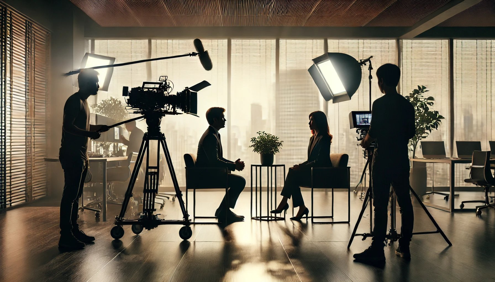

Production

บริษัทฯ เป็นโปรดักชั่นเฮ้าส์ที่ให้บริการครบวงจร ตั้งแต่การให้คำปรึกษาสร้างแบรนด์ การวางกลยุทธ์ จนถึงการผลิตภาพยนตร์โฆษณาในรูปแบบฟิล์มโปรดักชั่น (Film Production) และวีดีโอโปรดักชั่น (Video Production) เรามุ่งมั่นสร้างสรรค์งานคุณภาพด้วยกระบวนการผลิตที่ได้มาตรฐาน จากทีมงานมืออาชีพที่มีประสบการณ์ยาวนานในวงการโฆษณา
บริการของเรา
- โฆษณาบนทีวี: สร้างสรรค์โฆษณาที่โดดเด่นและน่าจดจำ
- ไวรัลคลิป: ออกแบบคลิปที่สร้างการรับรู้และแพร่กระจายอย่างรวดเร็ว
- วีดีโอแนะนำบริษัท: นำเสนอภาพลักษณ์องค์กรอย่างมืออาชีพ
- วีดีโอคอร์ปอเรท: สื่อสารข้อมูลองค์กรอย่างมีประสิทธิภาพ
- วีดีโอพรีเซ็นเทชั่น: ออกแบบวีดีโอสำหรับนำเสนอผลิตภัณฑ์หรือบริการ
- วีดีโอคอนเทนต์โฆษณาบนเฟสบุ๊คและยูทูป: สร้างคอนเทนต์ที่ดึงดูดและเข้าถึงกลุ่มเป้าหมาย
- วีดีโออบรมพนักงาน: ออกแบบสื่อการอบรมที่เข้าใจง่ายและน่าสนใจ
- งานกราฟิกโฆษณา CGI 2D/3D: สร้างสรรค์กราฟิกที่ทันสมัยและสวยงาม
- บริการทำสีหนัง (Color Grading): เพิ่มความสมจริงและสวยงามให้กับภาพ
- เช่าไฟกองถ่ายทำ (Lighting & Grip): อุปกรณ์ครบครันสำหรับการถ่ายทำ
- แต่งเพลงโฆษณาและเพลงประจำองค์กร: สร้างสรรค์เสียงเพลงที่โดดเด่นและเหมาะสม
จุดเด่นของเรา
เราทำงานแบบครบวงจร ตั้งแต่กระบวนการคิด (Creative) เทคนิคการถ่ายทำ (Production) และกระบวนการทางภาพ (Post-Production) พร้อมคุมงบประมาณให้คุณได้งานคุณภาพในราคาที่เหมาะสม